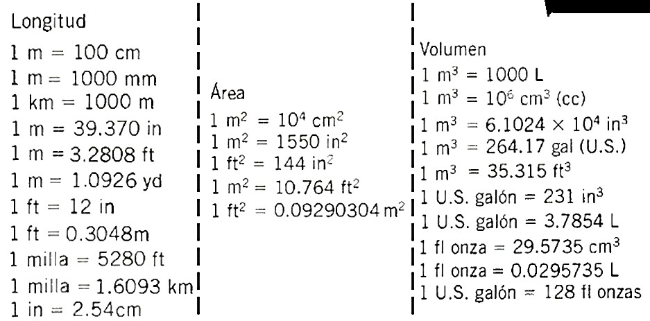

Sistema de Unidades
En todo trabajo técnico deben estipularse las unidades en que se miden las propiedades físicas. Un sistema de unidades especifica las unidades de las cantidades básicas de longitud, tiempo, fuerza y masa. Las unidades de los demás términos empleados se derivan de estas unidades básicas.
Las unidades básicas del SI son:
longitud = metro (m)
tiempo = segundo (s)
masa = kilogramo (kg) o N·s2/m
También está la unidad de fuerza, newton (N), que es equivalente a 1.0 kg*m/s2. Esto se deriva de la siguiente relación entre fuerza y masa,
donde a representa la aceleración, expresada en unidades de m/s2. Por lo tanto, la unidad derivada para la fuerza es
Así, una fuerza de 1.0 N es capaz de impulsar una masa de 1.0 kg con una aceleración cuya magnitud es de 1.0 m/s2. Se pueden utilizar newton o bien kg*m/s2 para la unidad de fuerza.
De manera similar, además de usar los kilogramos como unidad estándar de masa, es posible utilizar la unidad equivalente N*s2/m. Esto se puede derivar, de nuevo, a partir de F = ma:
Por lo tanto, se puede usar kg o bien N*s2/m para la unidad de masa.
En ocasiones llamado Sistema Inglés de Unidad Gravitatoria o Sistema Libra-Pie-Segundo, el sistema de medición de uso común en Estados Unidos define las unidades básicas de la siguiente manera:
longitud = pies (ft)
tiempo = segundo (s)
fuerza = libras (lb)
De estas unidades básicas se desprende la unidad derivada de masa, probablemente la más difícil de entender: el slug, porque estamos más familiarizados con la medición en términos de libras, segundos y pies. Para lo anterior puede resultar útil la relación entre fuerza y masa, F = ma, donde a representa la aceleración expresada en unidades de ft/s2.
Por lo tanto, la unidad derivada para la masa es
Esto significa que podemos utilizar al slug o bien lb-s2/ft para la unidad de masa. Un slug equivale a la masa de un cuerpo con un peso de 32.2 lb, si aplicamos una fuerza de 1.0 lb a una masa de 1.0 slug sufrirá una aceleración de 1.0 ft/s2.
Temperatura
La temperatura se indica con mayor frecuencia en °C (grados Celsius) o °F (grados Fahrenheit). Usted probablemente está familiarizado con los siguientes valores utilizados en la Tierra a nivel del mar:
El agua se congela a 0 °C e hierve a 100 °C.
El agua se congela a 32 °F e hierve a 212 °F.
Por lo tanto, hay 100 grados Celsius y 180 grados Fahrenheit entre los mismos dos puntos de datos físicos; además, 1.0 grado Celsius equivale a 1.8 grados Fahrenheit exactamente. A partir de estas observaciones podemos definir los procedimientos de conversión entre estos dos sistemas de la siguiente manera:
Dada una temperatura TF en °F, la temperatura TC en °C es
TC = (TF - 32)>1.8
Dada una temperatura en TC en °C, la temperatura TF en °F es
TF = 1.8TC + 32
Por ejemplo, dada una TF = 180 °F, se tiene
TC = (TF - 32)>1.8 = (180 - 32)>1.8 = 82.2 °C
Dada TC = 33 °C, se tiene
TF = 1.8TC + 32 = 1.8(33) + 32 = 91.4 °F
Temperatura Absoluta
Las escalas de temperatura Celsius y Fahrenheit se definieron de acuerdo con puntos de referencia arbitrarios, aunque la escala Celsius tiene puntos de referencia convenientes en relación con las propiedades del agua. Por otro lado, la temperatura absoluta se ha definido como el punto cero correspondiente a la condición en que se detiene todo movimiento molecular. A esto se le llama cero absoluto.
En el sistema de unidades SI, la unidad estándar de temperatura es el kelvin, cuyo símbolo estándar es K y la referencia (cero) es el punto de cero absoluto. Observe que no hay un símbolo de grado unido al símbolo K. En la escala Kelvin, el intervalo entre los puntos es el mismo que se utiliza para graduar la escala Celsius. Las mediciones han demostrado que el punto de congelación del agua se sitúa en 273.15 K por encima del cero absoluto. Entonces, es posible realizar la conversión a partir de la escala Celsius a kelvin utilizando
TK = TC + 273.15
Por ejemplo, dada una TC = 33 °C, se tiene
TK = TC + 273.15 = 33 + 273.15 = 306.15 K
Para la escala Fahrenheit, también se ha demostrado que el cero absoluto se sitúa en -459.67 °F. En algunas referencias, usted encontrará otra escala de temperatura absoluta llamada escala Rankine, donde el intervalo es el mismo que se emplea para graduar la escala Fahrenheit. Ahí el cero absoluto es 0 °R y cualquier medición en grados Fahrenheit se puede convertir a °R utilizando
TR = TF + 459.67
Además, dada la temperatura en °F, es posible calcular la temperatura absoluta en K a partir de
TK = (TF + 459.67)>1.8 = TR>1.8
Por ejemplo, dada un a TF = 180 °F, la temperatura absoluta en K es
TK = (TF + 459.67)>1.8 = (180 + 459.67)>1.8
= (639.67 °R)>1.8 = 355.37 K
A continuación, en la TABLA 1.2 se muestran unidades del SI y de uso común en Estados Unidos
Nota: Mecánica de Fluidos. 7 ed. (2015. pág. 7.). por Mott, R.L. & Untener J.A.
Otras unidades de medida
Nota: adaptado de mecánica de fluidos, facultad de ciencias naturales e ingeniería, unidades tecnológicas de Santander Barrancabermeja (2021) por MSc. Leidys Marleyn Rodríguez Castro
A continuación, se muestran las tablas de conversiones

Nota: Mecánica de Fluidos. 7 ed. (2015. pág. 509.). por Mott, R.L. & Untener J.A.
Nota: Mecánica de Fluidos. 7 ed. (2015. pág. 510.). por Mott, R.L. & Untener J.A.
Otras Conversiones
Nota: adaptado de mecánica de fluidos, facultad de ciencias naturales e ingeniería, unidades tecnológicas de Santander Barrancabermeja (2021. pág. 6) por MSc. Leidys Marleyn Rodríguez Castro

Nota: mecánica de fluidos, facultad de ciencias naturales e ingeniería, unidades tecnológicas de Santander Barrancabermeja (2021. pág. 7) por MSc. Leidys Marleyn Rodríguez Castro
Mott, R.L. & Untener J.A. (2015). Mecánica de Fluidos. 7 ed., pág. 4-7. México: Pearson Educación de México, S.A. de C.V.